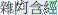

Abbreviations & Bibliography
| I. Primary Texts | |
|---|---|
| AN | Aṅguttara Nikāya |
| Be | Burmese-script ed. of AN (Chaṭṭha Saṅgāyana Tipiṭaka 4.0 electronic version) |
| Ee | Roman-script ed. of AN (Pali Text Society ed.) |
| Ce | Sinhala-script ed. of AN (Buddha Jayanti Tripitaka Series, printed ed.) |
| Mp | Manorathapūraṇī (Aṅguttara Nikāya-aṭṭhakathā) |
| Mp-ṭ | Manorathapūraṇī-ṭīkā |
| II. Other Pāli Texts | |
| References References to Pāli texts, unless specified otherwise, are to volume and page number of the PTS edition, with relevant line numbers in reduced type. References to DN and MN usually give first the sutta and section number in LDB and MLDB, respectively, followed by the source from the PTS edition. References to individual words or phrases, however, usually give only the source from the PTS edition. References to SN give first the sutta number in CDB followed by the volume and page number of the PTS edition; those to Udāna and Itivuttaka give the sutta number followed by the page number of the PTS edition. Page references to Vism are to the PTS edition, followed by the chapter and paragraph number in Ppn (see below). | |
| Ap | Apadāna |
| As | Atthasālinī (Dhammasaṅgaṇī-aṭṭhakathā) |
| Dhp | Dhammapada |
| Dhs | Dhammasaṅgaṇī |
| DN | Dīgha Nikāya |
| It | Itivuttaka |
| It-a | Itivuttaka-aṭṭhakathā |
| Mil | Milindapañha |
| MN | Majjhima Nikāya |
| Nett | Nettippakaraṇa |
| Nidd I | Mahāniddesa |
| Nidd II | Cūḷaniddesa |
| Paṭis | Paṭisambhidāmagga |
| Paṭis-a | Paṭisambhidāmagga-aṭṭhakathā |
| Pp | Puggalapaññatti |
| Pp-a | Puggalapaññatti-aṭṭhakathā |
| Ps | Papañcasūdanī (Majjhima Nikāya-aṭṭhakathā) |
| SN | Saṃyutta Nikāya |
| Sn | Suttanipāta |
| III. Works in Chinese | |
| DĀ | Dīrghāgama ( ) ) |
| EĀ | Ekottarikāgama ( ) ) |
| MĀ | Madhyamāgama ( ) ) |
| SĀ | Saṃyuktāgama () |
| SĀ2 | Saṃyuktāgama (another translation; incomplete) ( ) ) |
| T | Taisho edition
All references are to the Taisho edition transcribed in the CBETA Chinese Electronic Tripiṭaka Collection. |
| IV. Abbreviations of Other Works | |
| CDB | The Connected Discourses of the Buddha (translation of SN; see Bodhi 2000) |
| CMA | A Comprehensive Manual of Abhidhamma (see Bodhi 1993) |
| LDB | The Long Discourses of the Buddha (translation of DN; see Walshe 1995) |
| MLDB | The Middle Length Discourses of the Buddha (translation of MN; see Ñāṇamoli 1995) |
| Ppn | The Path of Purification (translation of Vism; see Ñāṇamoli 1956) |
| V. Reference Works | |
| (See under editor’s name in Bibliography) | |
| BHSD | Buddhist Hybrid Sanskrit Dictionary (see Edgerton 1953) |
| DOP | A Dictionary of Pāli, Part I (see Cone 2001) |
| DPPN | Dictionary of Pāli Proper Names (see Malalasekera 1937–38) |
| SED | Sanskrit-English Dictionary (see Monier-Williams 1899) |
| PED | Pāli-English Dictionary (see Rhys Davids and Stede 1921–25) |
| VI. Other Abbreviations | |
| BHS | Buddhist Hybrid Sanskrit |
| PTS | Pali Text Society |
| Skt | Sanskrit |
| VRI | Vipassana Research Institute (Igatpuri, India) |
| n., nn. | note, notes |
| p., pp. | page, pages |
| * | before title: title is hypothetical reconstruction; before word: word not listed in dictionary |
| In the introduction and notes, textual references in bold are to suttas within this translation (e.g., 6:10). | |
Bibliography
Akanuma, Chizen. 1929. The Comparative Catalogue of Chinese Āgamas and Pāli Nikāyas. 2nd ed., Delhi: Sri Satguru, 1990.
Anālayo. 2010. “Women’s Renunciation in Early Buddhism: The Four Assemblies and the Foundation of the Order of Nuns.” In Mohr and Tsedroen 2010: 65–98.
Anesaki, Masaharu. 1908. “The Four Buddhist Āgamas in Chinese: A Concordance of Their Parts and of the Corresponding Counterparts in the Pāli Nikāyas.” Transactions of the Asiatic Society of Japan 35.3: 1–149.
Bodhi, Bhikkhu. 1980. Transcendental Dependent Arising. Kandy, Sri Lanka: Buddhist Publication Society. Online at http://www.accesstoinsight.org/lib/authors/bodhi/wheel277.html.
———, trans. 1989. The Discourse on the Fruits of Recluseship: The Sāmaññaphala Sutta and Its Commentaries. Kandy, Sri Lanka: Buddhist Publication Society. Reprinted with new pagination, 2008. Page references are to the 2008 edition.
———, ed. 1993. A Comprehensive Manual of Abhidhamma: The Abhidhammattha Saṅgaha of Ācariya Anuruddha. Kandy, Sri Lanka: Buddhist Publication Society. 3rd ed., 2007.
———, trans. 2000. Connected Discourses of the Buddha: A Translation of the Saṃyutta Nikāya. Boston: Wisdom Publications.
———, trans. 2006. The Discourse on the Root of Existence: The Mūlapariyāya Sutta and Its Commentaries. 2nd ed. Kandy, Sri Lanka: Buddhist Publication Society.
———, trans. 2007. The All-Embracing Net of Views: The Brahmajāla Sutta and Its Commentaries, 2nd ed. Kandy, Sri Lanka: Buddhist Publication Society.
Bucknell, Roderick. 2004. Pali-Chinese Sūtra Correspondences. Unpublished electronic file. Updated with input from Anālayo, 2006.
Cone, Margaret. 2001. A Dictionary of Pāli, part 1. Oxford: Pali Text Society.
Edgerton, Franklin. 1953. Buddhist Hybrid Sanskrit Dictionary. Reprint, Delhi: Motilal Banarsidass, 2004.
Enomoto, Fumio. 1986. “On the Formation of the Original Texts of the Chinese Āgamas.” Buddhist Studies Review 3.1: 19–30.
Harvey, Peter. 1995. The Selfless Mind: Personality, Consciousness, and Nirvana in Early Buddhism. Richmond, Surrey: Curzon.
Horner, I. B., trans. 1938–66. The Book of the Discipline (VinayaPiṭaka), 6 vols. London: Pali Text Society.
Hüsken, Ute. 2010. “The Eight Garudhammas.” In Mohr and Tsedroen 2010: 143–48.
Kelly, John. 2011. “The Buddha’s Teachings to Lay People.” Buddhist Studies Review 28: 3–77.
Malalasekera, G.P. 1937–38. Dictionary of Pāli Proper Names, 2 vols. Reprint, London: Pali Text Society, 1960.
Mohr, Thea, and Jampa Tsedroen, eds. 2010. Dignity and Discipline: Reviving Full Ordination for Buddhist Nuns. Boston: Wisdom Publications.
Monier-Williams, M. 1899. Sanskrit-English Dictionary. Reprint, Delhi: Motilal Banarsidass, 2005.
Ñāṇamoli, Bhikkhu, trans. 1995. The Middle Length Discourses of the Buddha: A Translation of the Majjhima Nikāya. Ed. and rev. by Bhikkhu Bodhi. Boston: Wisdom Publications.
———, trans. 1956. The Path of Purification (Visuddhimagga). 5th ed. Kandy: Buddhist Publication Society, 1991.
Norman, K. R. 1983. Pāli Literature, including the canonical literature in Prakrit and Sanskrit of all the Hīnayāna schools of Buddhism. Wiesbaden: Otto Harrassowitz.
———. 1991. Collected Papers II. Oxford: Pali Text Society.
———. 1992. Collected Papers III. Oxford: Pali Text Society.
———. 2006a. A Philological Approach to Buddhism. 2nd ed. Lancaster: Pali Text Society.
———, trans. 2006b. The Group of Discourses (Sutta-nipāta). 2nd ed. Lancaster: Pali Text Society.
Nyanaponika Thera and Hellmuth Hecker. 2003. Great Disciples of the Buddha: Their Lives, Their Works, Their Legacy. Boston: Wisdom Publications.
Pecenko, Primoz. 2009. “The History of the Nikāya Subcommentaries (ṭīkās) in Pāli Bibliographic Sources.” Journal of the Pali Text Society 30: 5–32.
Pruitt, William, trans. 1998. Commentary on the Verses of the Therīs. Oxford: Pali Text Society.
Rahula, Walpola. 1956. Buddhism in Ceylon: The Anuradhapura Period. Reprint, Dehiwala, Sri Lanka: Buddhist Cultural Centre, 1993.
Rhys Davids, T. W., and William Stede. 1921–25. Pāli-English Dictionary. Reprint, Oxford: Pali Text Society, 1999.
Samuel, Geoffrey. 2008. The Origins of Yoga and Tantra: Indic Religions to the Thirteenth Century. Cambridge: Cambridge University Press.
Ṭhānissaro, Bhikkhu. 2007a. The Buddhist Monastic Code I. Rev. ed. Valley Center, CA: Privately published.
———. 2007b. The Buddhist Monastic Code II. Rev. ed. Valley Center, CA: Privately published.
Walshe, Maurice. 1995. The Long Discourses of the Buddha: A Translation of the Dīgha Nikāya. Boston: Wisdom Publications.
Warder, A. K. 1980. Indian Buddhism. Delhi: Motilal Banarsidass.
Woodward, F. L., and E. M. Hare, trans. 1932–36. The Book of Gradual Sayings. Reprint, Oxford: Pali Text Society, 1995.